FontForge の数学
FontForge の各種コマンドの基礎をなす数学の簡単な説明を意図しています
パラメータ表示されたスプラインについて理解していることを仮定しています。理解が不十分ならば、Bézier 曲線の解説をお読みください。
線形変換
線形変換は、元のスプラインの 2 つの端点と制御点を変換することにより、変換対象のスプラインと一致する変換関数です。この中には、一般的で需要の高い変換のほとんどが含まれます。
-
平行移動
x' = x + dx y' = y + dy -
拡大・縮小
x' = sx * x y' = sy * y -
回転
x' = cos(A)*x + sin(A)*y y' = -sin(X)*x + cos(A)*y -
傾き
x' = x + sin(A)*y y' = y
スプラインの極大値と極小値を検出する方法
スプラインの (x 軸または y 軸に沿った) 極大値または極小値は t に対するスプラインの 1 階導関数を取ることにより得られます。もし、以下のようなスプラインが存在して、x 軸に沿った極大値を見つけたいとします。
x = ax*t3 + bx*t2 + cx*t +dx
y = ay*t3 + by*t2 + cy*t +dy
まず、以下のように方程式を置きます。
dx/dt = 0
3*ax*t2 + 2*bx*t + cx = 0
次に、2 次方程式の根の公式より我々は t についてこれを解くことができます:
| t= | -2*bx ± sqrt(4*bx2 - 4*3*ax*cx) |
----------------------------------- |
|
2*3*ax |
スプラインの変曲点を求める方法
変曲点は d2y/dx2==0 (または無限大) になる場所に位置します。
残念ながら、この条件が成り立つ時に d2y/dt2==0 や d2x/dt2==0 が成り立つとは限りません。
| d2y/dx2 = | d/dt ((dy/dt)/(dx/dt)) / dx/dt |
| ( ((dx/dt) * d2y/dt2) - ((dy/dt) * d2x/dt2)) / (dx/dt)3 |
長々とした代数の果てに、これは t に関する 2 次式に還元されます:
| 3*(ax*by-ay*bx)*t2 + | ||
| 3*(cx*ay-cy*ax)*t + | ||
| cx*by-cy*bx | = 0 |
この式を詳細に検討すると、2 次スプライン (ay==ax==0) に変曲点が生じることが決して無いことが分かります。
グリフをラスタライズする方法
スプラインを近似する方法
FontForge の多くのコマンドで、点の列をスプラインに当てはめる必要が生じます。それらのうち最も自明なのは 編集(E)→合併(M) と エレメント(L)→単純化(S) コマンドですが、しかし同種の技法に依存しているコマンドは他にも多数あります。合併(M) コマンドの場合を検討することにします。以下のスプラインがあったとして、中央の点を削除して、オリジナルの 2 本のスプラインを近似する新しい 1 本のスプラインを生成したいのだとしましょう。
 =>
=>

FontForge は新しいスプラインを決定するのに最小自乗近似を使用します。まず古いスプライン上にあるいくつかの点の位置を算出し、それから、それらの点の位置における時刻 t の値を推測します1。我々が求めたいのは
x = ax*t3 + bx*t2 + cx*t +dx
y = ay*t3 + by*t2 + cy*t +dy
という形で、これらの点に最もよく当てはまる数式です。さて、パラメータ化されたスプラインの定義 (および、我々が端点を知っているという事実) から、以下が成り立ちます:
| dx = P0x | dy = P0y | |
| ax+bx+cx+dx = P1x | ay+by+cy+dy = P1y |
最小自乗近似から、我々は以下の事を知ることができます:
| 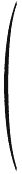 | 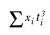 | 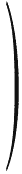= | 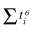 | 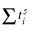 | 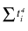 | 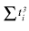 | * | ax | |
| 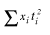 | 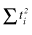 | bx | |||||||
| 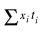 | 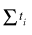 | cx | |||||||
| 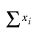 | n |
dx |
そして y についても同様の関係が成り立ちます。それによって、この数式から我々は 12 個の等式と 8 個の未知数を得ることができるわけですが、少し指定が多すぎたことになります。さて、これはスプラインでなければならないので、最初の 4 個の等式は必須です。その他に私が使用するのは x に関する下の 2 個の等式と、それに対応する y に関する 2 個の等式です。
これがうまくいかない理由
上記の行列は、オリジナルの 2 本のよい近似となる曲線を導き出します。しかしこの方法には 1 つの欠陥があります: 傾きに関する制約が存在せず、そして (驚くべきことに) 上記の手法によって得られる端点における傾きは、オリジナルの傾きと十分に近くはならないので、人間の目には、生成されたスプラインと、それに接続するスプラインとの間の接合部分が見えてしまいます。
私は、制約事項の多すぎる我々の等式群に、さらに 2 個の等式を加えることを試みました。
| dyt=0 | = | (dy/dx)t=0 * dxt=0 |
| dyt=1 | = | (dy/dx)t=1 * dxt=1 |
- または - | ||
| cy | = | old-cy/old-cx * cx |
| 3*ay+2*by+cy | = | (3*old-ay+2*old-by+old-cy)/(3*old-ax+2*old-bx+old-cx) * (3*ax+2*bx+cx) |
- または - | ||
| cy * old-cx | = | old-cy * cx |
| (3*ay+2*by+cy) * (3*old-ax+2*old-bx+old-cx) | = | (3*old-ay+2*old-by+old-cy) * (3*ax+2*bx+cx) |
が成り立つことが判明しています (ここで old-ay, old-by などは端点におけるオリジナルのスプラインの値です)。
これもうまくいきませんでした。
残念ながら、これもあまりうまくいきませんでした。特異行列が頻繁に出てくる結果となったのです (例えば、制御点の片方が端点と同じ位置にある場合)。
それで、それを求める代わりに、それぞれの端点における単位ベクトルの接線 (これは曲線の傾きそのものです) を計算することにします。これは通常、端点からその点の制御点へのベクトルを単位ベクトルに設定することによって行うことができますが、制御点が端点の上に載っているときには、別の方法を用いる必要があります (一つの方法として、t=0.001 または t=0.999 に設定してから差分ベクトルを求める手があります)。
それからオリジナルのアルゴリズムを適用します。
ここで端点に着目し、それらからその点の新しい制御点へ向けたベクトルを算出します。それから、これらのベクトルのオリジナルの傾き単位ベクトルとの内積をそれぞれ求めます (これにより、制御点の新しい位置の第一近似が得られます (CP = EP + len*Unit-Slope)。
ここでそれらのベクトルのそれぞれに対して、オリジナルの傾きからの寄与分を引き去り (オリジナルの傾きに垂直な成分のみが残ります)、それからこの垂直成分と反対側の端点の傾きとの内積を取り、これを反対側の端点における単位傾きベクトルと掛け合わせ、その分だけこの制御点の位置を調整します (CPo +=len2*Unit-Slopeo).
やっていない事
私が現在行っているのは、端点における傾きベクトルを計算し、それに続き、それらのベクトルに対する多数の妥当な長さを計算し、どれがオリジナルの曲線を最もよく近似するか調べる (それにより新しい制御点が決まります) ことです。最小自乗法は全く必要ありません。
1t の値の推測方法
FontForge は、併合する 2 本のスプラインの長さを近似します。もしも Pointi= Spline1(old-ti) であるならば、ti は以下の式で近似されます
ti = old-ti
*len(spline1)/(len(spline1)+len(spline2)
and if Pointi = Spline2(old-ti)
ti = len(spline1)/(len(spline1)+len(spline2) +
old-ti *len(spline2)/(len(spline1)+len(spline2)
これは、2 本のスプラインの相対的な長さに基づいた線形補間を行っているということを意味します。
パスのストロークのアウトラインの計算方法
円形のペン
PostScript は、円形のペンという主題に関するいくつかの変数をサポートしており、FontForge はこれらのすべてをエミュレートしようと試みています。基本的に、PostScript はある一定の線幅 width を持つパスを以下のようにして“ストローク”処理を行います:
曲線上のすべての点において
その位置における垂線ベクトルを求める
曲線から width/2 だけ離れた点を見つける
それらの 2 個の点の内側を塗り潰す
終了
これが、円形のペンが行うことの本質的な記述です。唯一の逸脱は、輪郭の端点または 2 本のスプラインが接合するものの、その傾きが連続的でない場合においてのみ起こります。PostScript では、ユーザが接合部と端点におけるふるまいを指定することができます。
 =>
=> 
スプラインの主要部に対して、2 組の点集合 (片方はオリジナルの曲線の左側で、もう片方は右側になります) を生成するために、上記の方法を用いることが可能であり、その後、それを元にして近似法を用いてスプラインを生成することが可能です (新しいスプラインの傾きは、それらの両端点においてオリジナルと同じでなければなりません。それにより、上記のアルゴリズムでオリジナルの傾きを用いることができます)。
残念ながら、これは常にうまく動作するわけではありません。スプラインが非常に鋭い折れ曲がりを見せた場合、上に示した我々の近似法はよい近似を出力することができません。そのようなことが起こった場合、FontForge はスプラインの鋭い折れ曲がりのそばに点を追加して 2 本に分割しようと試みます。2 本の部分スプラインの近似は一般にずっと良くなります (どのように FontForge は線を分割する場所を算出するのでしょうか? 2 つの方法を使用しています。1 つは単にオリジナルの曲線の極値に点を追加する方法で、もう 1 つは内側のパスがそれ自身と交差する箇所を探す方法です)。
PostScript のペンは以下のいずれかで終わることができます:
- 平らな端 — これは簡単です。単に片方のスプラインの端からもう 1 つの端に線分を引くだけです。
- 丸い端 — この場合単に半円を描画します (正しい方向に線を引いているかを確かめます)。
- 飛び出した端 — 単に 2 本のスプラインを延長して、傾きがスプラインと同じで長さが線幅の半分の線を引き、それからそれらの端点を直線で結びます。
接合箇所においては事情はより複雑になります。
 =>
=>
 ,
左の図の緑の線は、パスが接合部で遮られなければ伸ばされていたはずの曲線を示しており、接合部の内側では FontForge はどこで交差が起こるかを判別しなければなりません。一方、外側では FontForge は丸形、留め継ぎまたは切り落とした角のいずれかを作図しなければなりません。
,
左の図の緑の線は、パスが接合部で遮られなければ伸ばされていたはずの曲線を示しており、接合部の内側では FontForge はどこで交差が起こるかを判別しなければなりません。一方、外側では FontForge は丸形、留め継ぎまたは切り落とした角のいずれかを作図しなければなりません。
楕円形のペン
これは実際には円形のペンと全く同じです。例えば、高さの 2 倍の幅をもつ楕円形を考えてみましょう。パスのストローク処理を行う前に、水平方向を 50% に縮小し、その後に円形のペンでストローク処理を行い、最後に再び水平方向に 200% に拡大します。結果は、楕円形のペンを用いたのと変わりありません。
判りきった事ですが、楕円形がグリフの座標軸に比べ傾いた角度がつけられている場合、回転と拡大・縮小を伴う、より複雑な座標変換を適用しなければなりません。
矩形のペン (カリグラフィー用のペン)
矩形のペンと円形のペンとでは、微妙に勝手が異なります。もはや、曲線から垂直に一定の距離だけ離れた点を探すだけでは済みません。スプラインがペンの 1 辺と平行となる箇所を除いては、矩形のペンによる外側の輪郭は、その頂点のどれか 1 つによって塗り潰されたストロークとなります。ですから、行わなければならない作業をひっくるめて言うと、ペンの各辺と平行になる位置を発見し、それらの異なる点の間の小さな切れっ端ごとに問題を処理する必要があります。
困難な点の中間を処理するときは、人生は全く簡単になります。線の縁は常に同じ頂点によって描画され、ペンの中央から固定された距離に位置するので、オリジナルのスプラインをその距離だけ平行移動すればすべて完了です (それから、t が [0,1] の範囲に入るように補正を行う必要がありますが、これは別の単純な変換で処理可能です)
スプラインの傾きがペンの 1 つの辺に平行になる点に達したとき、パスの外側ではペンの輪郭のコピーを描くことになり、内側では上記と同じ方法で結びの点を計算することになります。
任意の凸多角形のペン
FontForge は現在の所これを行いません (任意の多角形を指定する UI はやや困難です) が、矩形のペンに対して働く方法のいくつかはあまり大きな困難なしに、任意の凸なポリゴンに拡張することができます。(MetaFont のフォントはこのようなペンで描くことができます。そのようなフォントが存在するかは寡聞にして知りません。
太さ可変のペン
ワコムのタブレットをお持ちの場合、FontForge は可変幅のペンもサポートします。上記のアルゴリズムの拡張は非常に簡単です。
角度の変化するペン
FontForge はこれをサポートしていません。よい UI が思いつきません。(MetaFont のフォントはこのようなペンで描くことができます)。